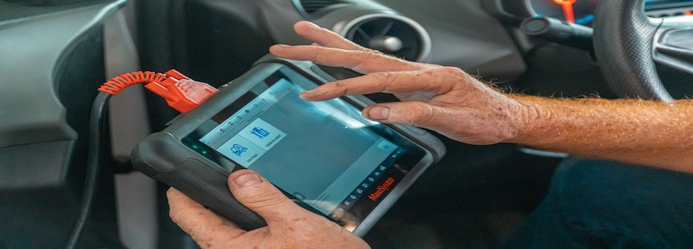
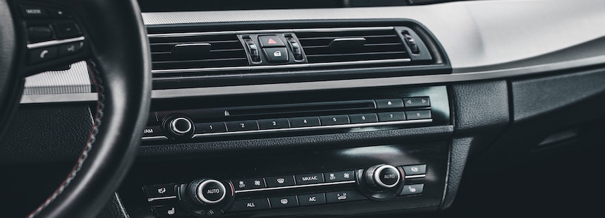
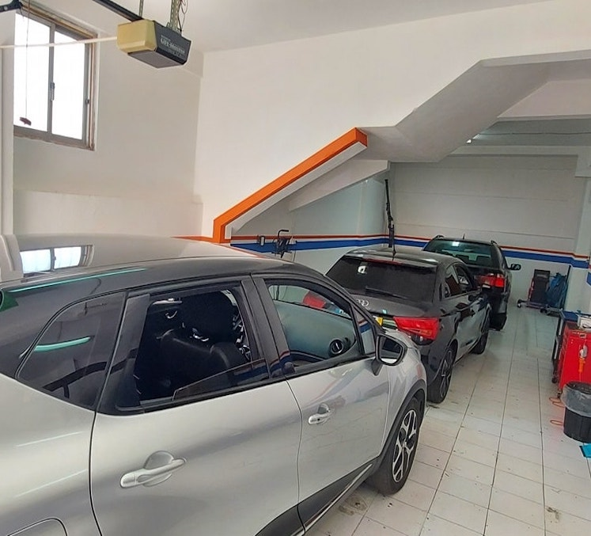

Serviços especializados em eletrónica automóvel e AVAC para um carro mais atualizado e confortável.


Conheça os nos nossos serviços e peça já o seu orçamento.
Sobre Nós

Autoradios.Gps é uma empresa especializada em eletrónica automóvel e sistemas de entretenimento para carros. Com sede em Odivelas, Lisboa, oferecemos soluções de alta qualidade para mecânica automóvel e AVAC auto.
A nossa equipe altamente qualificada e experiente está comprometida em fornecer produtos e serviços excepcionais para atender às necessidades dos nossos clientes. Trabalhamos com as principais marcas do mercado e estamos sempre atualizados com as últimas tendências e tecnologias do setor.
Serviços
Diagnósticos Automóvel
Saber mais...
🚗🔧 Precisão e Confiabilidade: Nossos Serviços de Diagnóstico Automóvel 🔧🚗
Na busca contínua pela saúde e desempenho ideais do seu veículo, apresentamos nossos serviços de diagnóstico automotivo de excelência. Com equipamentos de última geração e uma equipe de técnicos especializados, estamos prontos para desvendar os segredos do seu carro e oferecer soluções precisas para qualquer problema que possa surgir.
🔍 Detecção Avançada de Problemas 🔍
Nossos equipamentos de diagnóstico são capazes de mergulhar profundamente nos sistemas electrónicos e mecânicos do seu veículo. Independentemente de ser uma luz de verificação do motor acesa, ruídos estranhos ou comportamentos irregulares, estamos equipados para identificar e resolver uma ampla gama de problemas.
📈 Análise Baseada em Dados 📈
Utilizando dados em tempo real e algoritmos avançados, nossa equipe realiza análises detalhadas para compreender a saúde do seu veículo. Isso nos permite fornecer relatórios claros e detalhados sobre os problemas encontrados, bem como recomendações precisas para os próximos passos a serem tomados.
🚀 Eficiência e Economia 🚀
Ao realizar diagnósticos precisos desde o início, economizamos tempo e recursos valiosos. Evite substituições desnecessárias de peças e consertos ineficazes. Nossa abordagem direcionada garante que cada intervenção seja direcionada exatamente para onde é necessário, economizando seu dinheiro e mantendo seu veículo em funcionamento sem interrupções.
📊 Transparência Total 📊
Acreditamos na transparência em cada etapa do processo. Ao identificar problemas, explicamos em detalhes o que está acontecendo e como podemos resolver. Você terá todas as informações necessárias para tomar decisões informadas sobre o seu veículo.
🔧 Especialistas de Confiança 🔧
Nossa equipe é composta por técnicos experientes e qualificados, apaixonados por veículos e comprometidos em entregar serviços da mais alta qualidade. Confie em nós para cuidar do seu carro como se fosse o nosso próprio.
🔒 Soluções para Qualquer Marca e Modelo 🔒
Independentemente da marca, modelo ou ano do seu veículo, estamos preparados para oferecer diagnósticos precisos e soluções eficazes. Seja um carro de passeio, SUV ou veículo comercial, a nossa experiência abrange uma ampla gama de tipos de veículos.
Montagens de Autoradios Android
Saber mais...
🚗📱 Explore o Futuro do Entretenimento Automotivo com Nossos Serviços de Montagem de Autorrádios Android 📱🚗
Seja bem-vindo à revolução do entretenimento automotivo! Na nossa oficina especializada, estamos empolgados em oferecer serviços de montagem de autorrádios Android que transformarão sua experiência de condução. Prepare-se para uma combinação perfeita de tecnologia avançada e comodidade, tudo ao alcance das suas mãos.
🌟 Tecnologia Android de Última Geração 🌟
Nossos autorrádios Android não são apenas um acessório - eles são uma evolução completa do seu painel de controle. Com sistema operacional Android, você terá acesso a uma infinidade de aplicativos, navegação GPS, streaming de música e muito mais, tudo em um display touchscreen de alta resolução.
🎵 Sintonize-se com a Música 🎵
Aproveite o prazer de escolher suas músicas favoritas durante cada viagem. Nossos autorrádios Android oferecem integração perfeita com serviços de streaming, permitindo que você curta suas playlists e estações de rádio online preferidas, mantendo suas vibrações musicais onde quer que você vá.
🗺️ Navegação Descomplicada 🗺️
Diga adeus à incerteza nas estradas com a navegação GPS incorporada nos nossos autorrádios Android. Explore novos destinos com confiança, graças a recursos como mapas atualizados, direções em tempo real e informações de tráfego em tempo real.
📱 Conectividade Total 📱
Sua vida digital está sempre ao seu lado. Com a conectividade Bluetooth, você pode sincronizar seu smartphone com facilidade, permitindo chamadas mãos-livres e acesso instantâneo à sua lista de contatos. Mantenha-se conectado enquanto mantém o foco na estrada.
🛠️ Instalação Profissional 🛠️
Nossa equipe altamente qualificada garante uma instalação impecável do seu autorrádio Android. Do encaixe perfeito à configuração ideal, cuidamos de cada detalhe para garantir que a sua experiência de uso seja excepcional desde o primeiro momento.
💡 Personalização sem Limites 💡
Quer prefira um visual minimalista ou um painel de controle repleto de recursos, nossos autorrádios Android oferecem opções de personalização para atender ao seu estilo único. Trabalharemos com você para criar a configuração perfeita para as suas necessidades e preferências.
Diagnósticos e reparação de A/C Auto
Saber Mais...
❄️☀️ Conforto Perfeito em Qualquer Clima: Nossos Serviços de AVAC Auto ☀️❄️
Imagine entrar em seu veículo e ser recebido por um ambiente perfeitamente climatizado, independentemente das condições lá fora. Apresentamos nossos serviços especializados em sistemas de Ar Condicionado e Ventilação Automotiva (AVAC), projetados para proporcionar conforto absoluto enquanto você está ao volante.
🌬️ Controle Total da Temperatura 🌬️
Seja para enfrentar o calor escaldante do verão ou o frio cortante do inverno, nossos sistemas de AVAC garantem que a temperatura interna do seu veículo seja sempre a ideal. Com controle de temperatura preciso, você poderá personalizar o ambiente para atender às suas preferências e às de seus passageiros.
❄️ Ar Condicionado Eficiente ❄️
Nossos especialistas são hábeis em manutenção e reparo de sistemas de ar condicionado automotivo. Seja para recarregar o sistema, reparar vazamentos ou substituir componentes defeituosos, estamos preparados para garantir que seu ar condicionado funcione de maneira eficiente, proporcionando uma brisa fresca mesmo nos dias mais quentes.
☀️ Aquecimento Aconchegante ☀️
Durante os meses mais frios, nossa equipe garante que o sistema de aquecimento do seu carro esteja operando no seu melhor. Desfrute de um interior aquecido e confortável, para que cada viagem seja agradável, mesmo quando as temperaturas estiverem baixas lá fora.
💨 Ventilação e Qualidade do Ar 💨
Além de controlar a temperatura, nossa equipe cuida da qualidade do ar que você respira no interior do veículo. Realizamos limpeza e manutenção dos sistemas de ventilação para garantir que o ar seja fresco, livre de odores desagradáveis e poluentes.
🔧 Manutenção Preventiva e Reparos Rápidos 🔧
Nosso foco na manutenção preventiva ajuda a evitar problemas futuros em seu sistema AVAC. Realizamos inspeções regulares para identificar quaisquer problemas em potencial e tomar medidas antes que se tornem mais sérios. Quando os reparos são necessários, nossa equipe qualificada realiza intervenções rápidas e eficientes.
📊 Transparência e Confiabilidade 📊
Mantemos total transparência em todos os nossos serviços. Quando identificamos problemas, explicamos claramente as soluções necessárias e fornecemos um orçamento transparente. Sua satisfação e confiança são nossa prioridade número um.
Sistemas de Audio Auto
Saber Mais...
🎵🚗 Experiência Sonora Incomparável com Nossos Serviços de Sistemas de Áudio Automotivo 🚗🎵
Prepare-se para elevar sua experiência de condução a um novo patamar com os nossos serviços especializados em sistemas de áudio automotivo. Se você é um entusiasta da música ou simplesmente aprecia um som cristalino enquanto dirige, estamos aqui para transformar seu veículo em um verdadeiro palco musical sobre rodas.
🔊 Som de Qualidade Premium 🔊
Nossa paixão por áudio é evidente em cada projeto que realizamos. Com uma ampla gama de opções de alto-falantes, subwoofers, amplificadores e sistemas de equalização, garantimos que você obtenha um som de qualidade premium que preenche o interior do seu carro com notas nítidas e graves profundos.
🎶 Personalização Sob Medida 🎶
Compreendemos que cada carro é único, assim como as preferências de som de cada proprietário. Nossos especialistas trabalham em estreita colaboração com você para entender suas necessidades e desejos musicais. Seja a criação de um sistema de áudio de alta potência ou um ambiente sonoro mais balanceado, criamos soluções sob medida para se adequar ao seu gosto.
🔌 Integração Perfeita 🔌
Com as tecnologias em constante evolução, sabemos como integrar sistemas de áudio modernos aos veículos existentes. De sistemas de infotainment a conectividade Bluetooth, garantimos uma integração perfeita que mantém o aspecto estético do seu carro enquanto oferece recursos de última geração.
🚀 Desempenho Excepcional 🚀
Não apenas instalamos sistemas de áudio, mas também otimizamos o desempenho para garantir que você obtenha o máximo proveito deles. Do ajuste fino dos equalizadores à configuração ideal dos alto-falantes, nossos especialistas garantem uma experiência sonora que excede suas expectativas.
🎉 Celebre a Música 🎉
Acreditamos que a música é uma parte fundamental da jornada de condução. Quer esteja viajando sozinho ou com amigos, nossos sistemas de áudio criam o cenário perfeito para celebrar cada momento na estrada com trilhas sonoras emocionantes.
Eletricidade e Eletrónica Auto
Saber Mais...
🔌 Domínio Elétrico Impecável 🔌
Os nossos técnicos altamente qualificados entendem a importância dos sistemas elétricos para o funcionamento ideal do seu veículo. Seja para diagnóstico e reparo de falhas elétricas, instalação de novos componentes ou manutenção preventiva, estamos prontos para oferecer soluções precisas e confiáveis.
💡 Sistemas Electrónicos Avançados 💡
À medida que os veículos se tornam mais avançados, a electrónica desempenha um papel vital na sua operação. Os nossos especialistas são proficientes em lidar com sistemas electrónicos complexos, desde unidades de controlo até sistemas de entretenimento e navegação. Queremos que você aproveite ao máximo cada recurso electrónico do seu carro.
🛠️ Reparações Personalizadas 🛠️
Não importa se é um simples problema de fusível ou um desafio electrónico mais complexo, estamos prontos para realizar reparos personalizados para atender às necessidades do seu veículo. A nossa abordagem focada garante que cada cliente receba a atenção necessária para resolver eficientemente seus problemas.